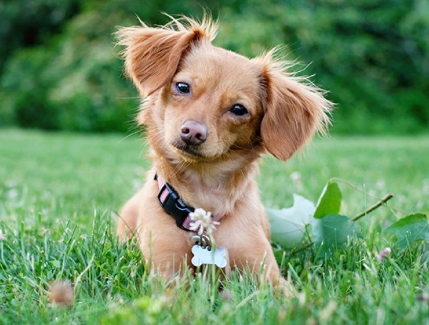
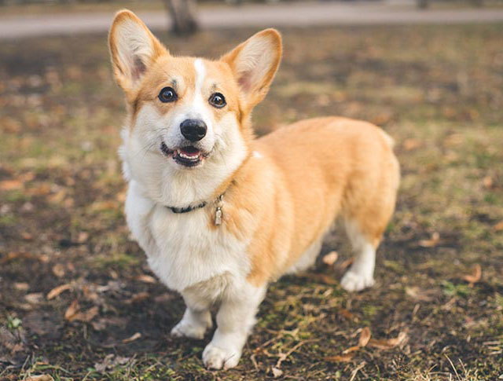
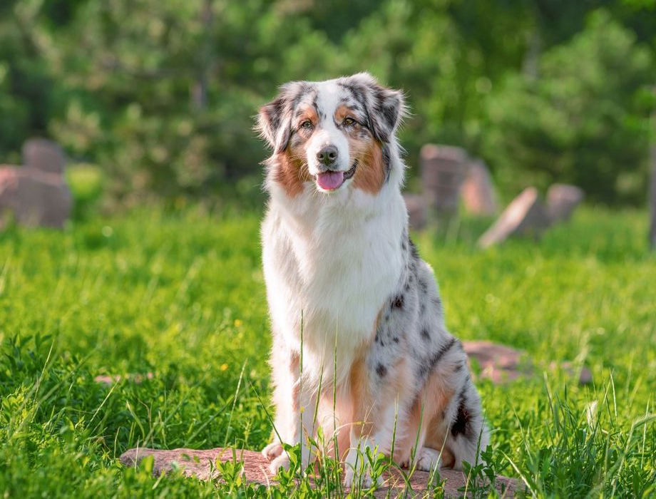

A Chiweenie is a small mixed-breed dog that is a cross between a Chihuahua and a Dachshund. They are usually energetic, playful, and affectionate, and they often form strong bonds with their owners. Chiweenies can have short or slightly longer coats and come in many colors and patterns.

A Pembroke Welsh Corgi is a small herding dog known for its short legs, long body, and large, upright ears. They are intelligent, energetic, and friendly, often forming strong bonds with their families. Corgis are playful and active dogs that enjoy exercise, learning new things, and spending time with their owners.

An Australian Shepherd is a medium-sized herding dog known for its intelligence, energy, and beautiful coat, which can come in several colors and patterns. They are loyal, playful, and eager to learn, making them good companions for active families. Australian Shepherds need plenty of exercise and mental stimulation to stay happy and healthy.